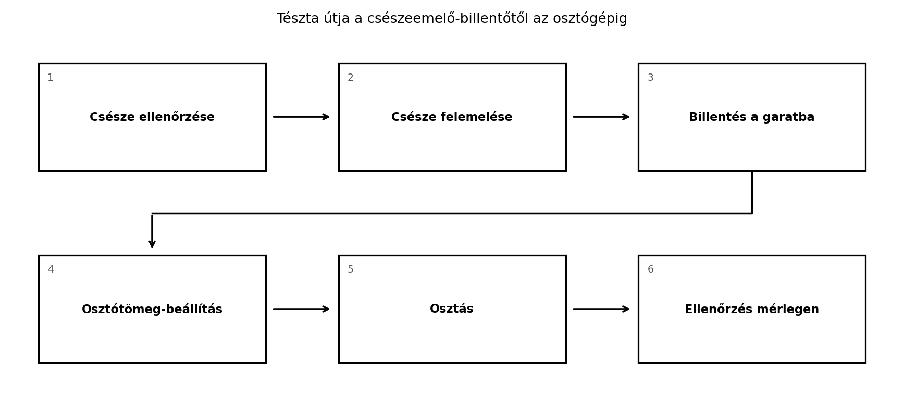

Hajnali műszakban a dagasztócsészéből kiemelkedik az érett kenyértészta. Ahhoz, hogy a kemencébe azonos méretű és súlyú veknik kerüljenek, a tésztát egyenletes darabokra kell osztani. A kézi osztás lassú, és a darabok tömege 5–10%-kal is eltérhet; egy 1 kg-os, de valójában 950 g-os kenyérnél már egy vásárlói reklamáció is lehet, egy 1050 g-os darabnál pedig többletköltség. A kenyértészta-osztógép ezt a műveletet gyorsan és beállítható tömeggel végzi. A csészeemelő-billentő pedig a nehéz, kerek vagy négyszögletes dagasztócsészét emeli fel és billenti a feldolgozó asztal vagy az osztógép garatja fölé, így a péknek nem kell a több tíz kilogrammos tésztát kézzel átemelnie.
Képzelj el egy 100 kg-os, rozskenyérhez készült tésztát egy kerek csészében. A pék a csészét a billentővillára gurítja, a gép felemeli körülbelül 160 cm magasra, majd a csészét lassan előredönti, és a tészta a kenyértészta-osztógép tágas garatjába csúszik. Az osztógép dugattyúja kinyomja a tésztát, egy késrendszer levágja a felesleget, és sorban kijönnek az azonos tömegű, körülbelül 900 g-os darabok. A folyamat egy folyamatos, ritmusos munka, amely a hibás beállításnál viszont balesetet vagy tömegeltérést okoz.

A lépések egymás után ismétlődnek; a csészeürítő-billentő a tésztakészítés és a tésztafeldolgozás közötti hidat, az osztógép a feldolgozás első gépét jelenti.
Definíció. A csészeemelő-billentő (csészeürítő-billentő) olyan anyagmozgató berendezés, amely a dagasztó- vagy keverőgép cserélhető tartályát, azaz a csészét emeli fel, majd billenti meg, hogy a tésztát a feldolgozó asztalra, szállítószalagra vagy osztógép garatjába ürítse.
Definíció. A kenyértészta-osztógép (osztógép, porciózógép) a tésztát beállított tömegű darabokra osztó gép. A garatjába juttatott tésztát beállított tömegű darabokra osztja; a csészét nem ő üríti ki, azt a csészeemelő-billentő (csészeürítő-billentő) végzi. A „csészeosztó” üzemi szóhasználat ugyanezt a gépet jelöli (ellenőrizendő: üzemi szóhasználat), de nem azonos a billentővel.
Szabály. A tésztaosztás akkor pontos, ha a gép minden darabja a célfeladási tömeg tűrésén belül van. A feladási tömeg a késztermék tömegéből és a sütési meg hűlési veszteségekből számított nyersdarab-tömeg; ezt a Feladási tömeg, préstömeg és osztási számítások alfejezetben számoljuk. Az osztógépet ennek a feladási tömegnek megfelelően kell beállítani.
Továbbvitt eredmény. Az itt bemutatott osztási pontosság és a leválasztó olaj megfelelő adagolása közvetlenül befolyásolja a gömbölyítés és a hosszformázás minőségét; a Gömbölyítő-, hosszformázó gépek és pihentetők alfejezetben látni fogjuk, hogy a pontatlan vagy ragadós osztott darab hogyan okoz gömbölyítési hibát.
A csészeemelő-billentő a pékség egyik leginkább igénybe vett kiszolgáló berendezése. Feladata kettős: a kerekes vagy targoncás csészét a keverő- vagy dagasztógéptől a feldolgozás helyére szállítani (ehhez sokszor a csésze saját kerekein gurítható), majd gépi erővel felemelni és megbillenteni. A csésze lehet rozsdamentes vagy saválló acélból készült, űrtartalma a tipikus kis- és középüzemi méretben 80–150 l (ellenőrizendő: a gép gépkönyve és adattáblája).
A csészeemelő-billentő működési elve szerint lehet:
A csészeemelő-billentő munkafolyamata jellemzően a következő:
Az ábra a gépet három fázisban mutatja: A befogás (2. lépés), B emelés (3–4. lépés), C billentés a garat fölé (5. lépés). A számozott részek: 1 állvány, 2 emelővilla, 3 akasztófül és villahorony, 4 csésze, 5 hidraulikus munkahenger, 6 kezelőkar, 7 garat, 8 veszélyzóna, 9 adattábla a teherbírással.
A sraffozott 8-as zóna (a felemelt csésze alatt, a csésze és a gép között) emelés és billentés közben tiltott terület; a két áthúzott betétkép a két életveszélyes hibát mutatja: a felemelt csésze alátámasztását és a csésze alá nyúlást. A HTML-kiadásban a hat munkalépés léptethető, a veszélyzóna mozgás közben villog.
Gépbiztonság. A csészeemelő-billentőn a legnagyobb veszély a zúzás és a leeső teher miatt következhet be. Ezért:
Hibacsoport. A csészeemelő-billentővel kapcsolatos tipikus hibák: a csésze nem ül pontosan a villán, a gép felemelés közben megbillen; a kezelő a felemelt csésze alá nyúl; a billentést egyszerre hirtelen, teljes sebességgel indítja. Mindhárom a tészta leeséséhez, a kezelő sérüléséhez vagy a gép meghibásodásához vezethet.
A kenyértészta-osztógép a tésztát általában térfogat alapján adagolja, tehát nem minden darabot mér le, hanem egy beállított térfogatú kamrába préseli a tésztát, és azt választja le. Emiatt a tényleges tömeg függ a tészta sűrűségétől: a lágy, levegős tészta kisebb, a tömör, hideg tészta nagyobb tömegű darabot ad ugyanakkora térfogaton.
Dugattyús osztógép. A leggyakoribb kenyértészta-osztó. Szerkezete:
Az alábbi sematikus metszet a gépet a „mérőkamra tele, kés vág” pillanatban mutatja. A munkaciklus: (1) szívás – a fődugattyú hátramegy, a tészta a garatból a szívótérbe kerül; (2) préselés – a dugattyú a tésztát a mérőkamrába nyomja; (3) leválasztás – a kés levágja a kamra tartalmát; (4) kitolás – a darab a kihordó szalagra kerül. A sraffozott keretek a három veszélyes zónát jelölik: A behúzás a garatnál, B nyírás a késnél, C zúzás a dugattyúnál.
A vészleállító (8) vészhelyzetben leállítja a gépet, de nem választja le az energiáról: a garatba, a kamrába vagy a késhez nyúlni csak főkapcsolóval leválasztott, újraindítás ellen biztosított, teljesen álló gépen szabad. A HTML-kiadásban a négy lépés léptethető, a csúszkákkal pedig a mérőkamra térfogata és a tészta sűrűsége állítható: a darabtömeg (például és mellett ; szemléltető érték).
Vákuumos osztógép. A vákuumos osztógép a dugattyús elv továbbfejlesztése: a tésztát vákuummal szívják be a mérőkamrába, így a kamra minden ciklusban egyenletesen, kisebb nyomóerővel telik meg; ettől a darabtömeg egyenletesebb, és a tészta szerkezete kevésbé sérül (ellenőrizendő: gyártói leírás). A vákuumos gépek jellemzően nagyobb tömegpontosságúak, de drágábbak és karbantartás-igényesebbek.
A vákuumos osztógépnél a vákuumszintet és a vákuumidőt a termékhez és a gyártói adatlaphoz kell igazítani (ellenőrizendő: gyártói adatlap). A kamra megtöltése után a tésztát a dugattyú a levágó késhez nyomja.
Definíció. Az osztógép tömegbeállítása a mérőkamra térfogatának, a dugattyú löketének vagy a vágási időnek a módosítása úgy, hogy a leválasztott tésztadarabok átlagos tömege a kívánt feladási tömeggel egyezzen.
Megjegyzés. Az osztógép nem mérleg: a beállított térfogat és a tészta sűrűségének szorzata adja a tömeget. Ezért a tömegellenőrzés mindig mérlegen történik, és a beállítást utána finomhangoljuk.
Gyakorlati lépések az osztótömeg beállításához:
ahol a lemért darabok száma, az egyes darabok tömege.
A leválasztó olaj. Az osztógép tésztával érintkező részei (garat, mérőkamra, kés) között a tészta ragadna, ezért vékony filmnyi élelmiszeripari leválasztó olajat használnak. A leválasztó olaj csökkenti a súrlódást, megkönnyíti a tészta kiürülését, és védi a gépet a tészta tapadásától, a beszáradt tésztamaradéktól. Fontos, hogy a leválasztó olaj élelmiszer-ipari minőségű legyen, tehát élelmiszerrel érintkezésben használható. A gyakorlatban használnak finomított növényi (pl. napraforgó- vagy repce-) olajat, illetve speciális, vékony filmréteget képező leválasztó szereket (ellenőrizendő: az üzemi technológiai lap és a gyártói ajánlás).
Higiénia. A leválasztó olajat az élelmiszerekkel érintkező anyagokra vonatkozó szabályok szerint kell kezelni és tárolni; a tartály fedett, az adagolócső tiszta legyen. Az olaj mennyiségét úgy kell beállítani, hogy a tészta ne ragadjon, de ne is ússzon az olajban – a felesleges olaj a késztermék érzékszervi hibáját és a jelölési eltérést okozhatja.
Allergén. A leválasztó olaj vagy leválasztó szer allergént tartalmazhat: például földimogyoró- vagy szezámolaj (finomítva is jelölendő allergén!), nem finomított szójaolaj, illetve olyan adalék (pl. szójalecitin), amely nem mentesül a jelölés alól. Az 1169/2011/EU II. melléklete szerint csak a teljesen finomított szójaolaj (és -zsír) mentesül; a repce nem tartozik a 14 allergéncsoport közé (ellenőrizendő: az 1169/2011/EU II. melléklete és a leválasztó szer termékspecifikációja). Az üzemnek pontosan tudnia kell, milyen olajat használ, és ezt a termék jelölésénél, illetve az allergénkeresztszennyeződés értékelésénél figyelembe kell venni. A gluténmentes, tojás-, tej- vagy szezámmentes termékek gyártásakor a gép és az olaj elkülönítése különösen fontos.
Gépbiztonság. A kenyértészta-osztógép legveszélyesebb részei a vágókés, a dugattyú és a behúzó garat. A következő szabályok kötelezők:
Tisztítás. A kenyértészta-osztógépet minden műszak végén, és termékváltáskor is tisztítani kell. A tisztítás lépései:
Higiénia. A gépen nem maradhat tésztamaradék, mert a vizes, szerves anyagban a mikroorganizmusok gyorsan szaporodnak. A leválasztó olaj avasodása is szennyezést okoz. A tisztításhoz élelmiszeripari tisztító- és fertőtlenítőszert kell használni, és a vegyszerek biztonsági adatlapját ismerni kell.
Cél: A tanuló biztonságosan üzemelteti a csészeemelő-billentőt és a kenyértészta-osztógépet, beállítja a kívánt osztási tömeget, és ellenőrzi a darabok tömegét.
Eszközök és anyagok: csészeemelő-billentő, kenyértészta-osztógép, hitelesített mérleg, leválasztó olaj, tiszta munkaruha, hajháló, munkavédelmi cipő, élelmiszeripari törlőkendő, dokumentációs lap.
Higiénia. Mosson kezet az üzem higiéniájának megfelelően, viseljen tiszta munkaruhát, hajhálót, szakállvédőt ha szükséges, és ne viseljen ékszert. Ellenőrizze, hogy a munkaterület tiszta, a gépek környéke száraz, csúszásmentes. A mérleg tiszta és hitelesített.
Gépbiztonság. Végezze el az üzem előtti szemlét: a csészeemelő-billentő hidraulika tömlői, a villa rögzítőelemei, a csésze akasztófülei; az osztógép védőburkolatai, reteszelése, vészleállítója; a vágókés épsége; a kés csavarjai; az áramtalanító kapcsoló hozzáférhető. Csak akkor indítsa a gépet, ha minden biztonsági elem működik; a vészleállítót próbálja megnyomni és visszaállítani.
Lépések:
Ellenőrzési pontok: a darabok átlagos tömege a feladási tömeghez képest a megengedett tűrésen belül van; a darabok felülete sima, nem szakadt, nem olajos; a gép rezgése, hangja egyenletes; a vágókés nem rágott szélű.
Tipikus hibák:
Dokumentálás. Jegyezze fel a mérési eredményeket a tömegellenőrző lapra, a gép beállítását, az olajfeltöltést és az esetleges eltéréseket, korrekciókat. A HACCP-dokumentációban a leválasztó olaj típusát és az allergén-vonatkozásokat is rögzíteni kell.
A kenyértészta-osztógép munkájának minőségi jellemzői:
A minőségellenőrzésnél a tömegmérést hitelesített mérleggel végezzük; az eredményeket a minőségi bizonylathoz csatoljuk (ellenőrizendő: az üzemi minőségirányítási utasítás).
| Tünet | Lehetséges ok | Helyes gyakorlat |
|---|---|---|
| A darabok tömege rendre kisebb a feladási tömegnél | A mérőkamra térfogata túl kicsi; a tészta felmelegedett, levegősebb lett | Növelje a kamratérfogatot; ellenőrizze a tészta hőmérsékletét |
| A darabok tömege ingadozik | A garat nem eléggé feltöltött; a leválasztó olaj adagolása egyenetlen; a dugattyú tömítése kopott | Tartsa a garatot legalább félig; ellenőrizze az olajfúvókát; hívjon karbantartót a tömítés cseréjéhez |
| A tészta ragad a vágókéseihez | Nem megfelelő vagy kevés leválasztó olaj; a kés nem tiszta; a tészta túl lágy | Állítsa be az olajadagolást; tisztítsa a kést; ellenőrizze a tészta TA értékét |
| A csészeemelő-billentő nem emel, vagy csörög | Hidraulika olajszint alacsony; a szivattyú hibás; a villa retesz kiakadt | Állítsa le a gépet, ne erőltesse; ellenőrizze az olajszintet, jelezze a karbantartónak |
1. feladat (A). Határozza meg a csészeemelő-billentő és a kenyértészta-osztógép feladatát a tésztafeldolgozás folyamatában.
2. feladat (A). Mi a dugattyús és a vákuumos kenyértészta-osztógép alapvető működési elve? Melyik előnye a vákuumozás?
3. feladat (B). Egy pékségben a feladási tömeg 900 g. Az osztógépből kikerülő 10 darab tömege: 895, 902, 898, 905, 900, 893, 907, 899, 901, 896 g. Számítsa ki az átlagot és a legnagyobb eltérést az átlagtól. A tűrés ±1,5%. Megfelel-e a tömegpontosság?
4. feladat (B). A tanuló beállítja az osztógépet, de a darabok átlaga 780 g, míg a feladási tömeg 850 g. Mennyivel kell növelnie a mérőkamra térfogatát, ha feltételezzük, hogy a tészta sűrűsége nem változik? A térfogatnövelés százalékát számítsa ki.
5. feladat (C). Az éjszakai műszakban a darabok tömege folyamatosan csökken. Az üzemvezető szerint a tészta meleg, a pék szerint a garat túl alacsony. Milyen mérésekkel és megfigyelésekkel tudná eldönteni az okot? Írjon le egy hibakeresési sorrendet.
6. feladat (D). A gyakorlati útmutató alapján sorolja fel, milyen dokumentációs bejegyzést kell tenni az osztógép tömegellenőrzéséről és a leválasztó olajról. Miért fontos az allergén szempontú nyilvántartás?
Önellenőrzés – válaszok
1. feladat (A) megoldása: A csészeemelő-billentő a dagasztócsészét biztonságosan felemeli és megbillenti, így a tésztát az osztógép garatjába vagy a feldolgozó asztalra juttatja. A kenyértészta-osztógép a tésztát beállított tömegű darabokra porciózza, biztosítva az azonos feladási tömeget a későbbi gömbölyítéshez és formázáshoz.
2. feladat (A) megoldása: A dugattyús osztógép a tésztát egy mérőkamrába nyomja, majd egy vágókés leválasztja a darabot; a tömeg a kamra térfogatától és a tészta sűrűségétől függ. A vákuumos osztógép ezen felül a tésztát vákuummal szívja be a mérőkamrába, így a kamra egyenletesen, kisebb nyomóerővel telik meg; ettől a darabok tömege egyenletesebb, a tészta szerkezete kevésbé sérül (ellenőrizendő: gyártói leírás).
3. feladat (B) megoldása: Átlag = . A legnagyobb eltérés az átlagtól: a 6,6 g-tal alacsonyabb (893) és a 7,4 g-tal magasabb (907) darabok között a 907-es; az eltérés 7,4 g. A tűrés 900 g ±1,5% = ±13,5 g, azaz 886,5–913,5 g. Minden darab ezen belül van, így megfelel. (Megjegyzés: az átlag 899,6 g, ami a feladási tömegtől 0,4 g-mal tér el, ez is a tűrésen belül van.)
4. feladat (B) megoldása: A tömeg a térfogattal arányos, ha a sűrűség állandó. A jelenlegi átlag 780 g, a kívánt 850 g. A szükséges térfogat-növekedés százaléka:
Tehát a mérőkamra térfogatát körülbelül 9%-kal kell növelni, majd újabb méréssel finomítani.
5. feladat (C) megoldása: Először mérje a tészta hőmérsékletét: ha 28 °C fölé emelkedik, a tészta meleg, gázosodik, sűrűsége csökken. Ekkor a dagasztóvíz hőmérsékletét kell csökkenteni, vagy a tésztát hamarabb feldolgozni. Ha a hőmérséklet stabil, ellenőrizze a garat szintjét: ha a garat 30% alatt van, a dugattyú levegőt szív be, és a darabok tömege csökken. Töltse fel a garatot, és ismét mérje a darabokat. Ha mindkettő rendben, ellenőrizze a gép kopását (dugattyú tömítés, mérőkamra állítás), és hívjon karbantartót.
6. feladat (D) megoldása: A tömegellenőrző lapra fel kell jegyezni a gép beállítását, a lemért darabok tömegét, az átlagot, az esetleges korrekciót és a mérleg azonosítóját. A leválasztó olajról rögzíteni kell a típusát, tételazonosítóját, a feltöltés időpontját és mennyiségét. Az allergén szempontú nyilvántartás azért fontos, mert a leválasztó olaj allergén összetevőt (pl. földimogyoró- vagy szezámolaj – finomítva is –, nem finomított szójaolaj, szójalecitin) tartalmazhat, és ezt a termékallergén-kezelési tervben és a jelölésben is figyelembe kell venni; a keresztszennyeződés elkerüléséhez minden tételről tudni kell, mi kerül a gépbe.
A csészeemelő-billentő a dagasztócsészét emeli és billenti, hogy a tészta biztonságosan az osztógép garatjába kerüljön. Kezelésénél a legnagyobb veszély a zúzás, ezért a felemelt csésze alá tilos nyúlni, és a terhelési határt be kell tartani. A kenyértészta-osztógép a tésztát térfogat alapján adagolja: a dugattyús gép mérőkamrába préseli a tésztát, majd kés leválasztja; a vákuumos gép ezt vákuumozással pontosítja. Az osztási tömeg beállítása a mérőkamra térfogatának módosításával történik, és mindig mérleggel ellenőrzik. A leválasztó olaj csökkenti a ragadást, de allergén és higiéniai kockázatot is hordozhat. A gépet csak betanítás után, védőburkolatokkal, reteszeléssel és vészleállítóval szabad üzemeltetni; tisztítás csak leállított, áramtalanított, újraindítás ellen biztosított állapotban történhet. A tömegellenőrzést a minőségügyi (és fogyasztóvédelmi) dokumentáció részeként rögzítjük. Továbbvitt eredmény: a pontos osztott darabok a Gömbölyítő-, hosszformázó gépek és pihentetők alfejezetben biztosítják a jó gömbölyítést és hosszformázást.